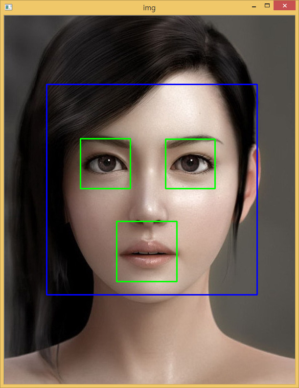

xwMOOC 고생대 프로젝트
얼굴인식 - Cascade
1. Haar 케스케이드
Haar 케스케이드(Cascade)를 활용하여 사진 속 얼굴과 눈을 인식해본다.

Haar 케스케이드 눈과 얼굴 xml 파일을 구해 이것을 이미지 속 얼굴을 탐지한다.
2. 파이썬 코드 1
- 얼굴과 눈 케스케이드를 입력받아 저장해 놓는다.
- 얼굴과 눈을 인식할 이미지를 불러온다.
- 먼저 이미지에서 얼굴을 인식하고 나서 사각형을 그려 넣는다 → 청색(255,0,0)
- 얼굴 영역내에서 두 눈의 위치를 식별해 사각형을 위치시킨다 → 노란색(0,255,0)
import numpy as np
import cv2
face_cascade = cv2.CascadeClassifier('cascade/haarcascade_frontalface_default.xml')
eye_cascade = cv2.CascadeClassifier('cascade/haarcascade_eye.xml')
img = cv2.imread('../fig/female-frontface.jpg')
##img = cv2.imread('../fig/many-frontface.jpg')
gray = cv2.cvtColor(img, cv2.COLOR_BGR2GRAY)
faces = face_cascade.detectMultiScale(gray, 1.2, 1)
for (x,y,w,h) in faces:
cv2.rectangle(img,(x,y),(x+w,y+h),(255,0,0),2)
roi_gray = gray[y:y+h, x:x+w]
roi_color = img[y:y+h, x:x+w]
eyes = eye_cascade.detectMultiScale(roi_gray)
for (ex,ey,ew,eh) in eyes:
cv2.rectangle(roi_color,(ex,ey),(ex+ew,ey+eh),(0,255,0),2)
cv2.imshow('img',img)
cv2.waitKey(0)
cv2.destroyAllWindows()